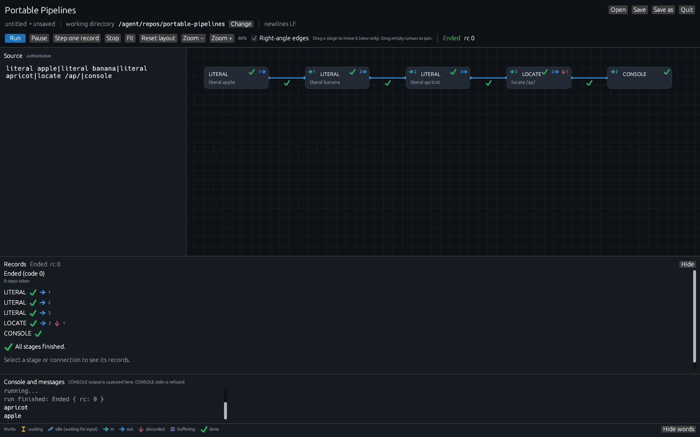

Portable Pipelines is a portable implementation of
IBM's CMS Pipelines (z/VM), written in Rust so it can
run on Windows, macOS, and Linux. You call it with the command
pipe. Records move from one stage to the next through a
| connector, the same way they do on z/VM. A stage never
calls the next one; it only reads records and writes records. A
coroutine dispatcher, following John Hartmann's design, is what actually
moves the data along.
If you already know CMS Pipelines or TSO Pipelines, this is meant to feel familiar, just on a PC. If you are new to it, think of a pipeline as a short line of small programs that each work on records. One stage might read a file, the next keep only the lines you care about, and the last write what remains to the terminal. You plug them together; they do not have to know about each other.
The current release is 0.2.4. Run pipe --gui from the
unpacked download to open the native GUI. See
What's new in 0.2.4.
The GUI
pipe --gui opens the Portable Pipelines GUI, a native
desktop window that draws the stages, steps one record at a time,
and shows the records as a spreadsheet. Each download includes
pipe-gui next to pipe, so the command
works from the unpacked folder. Press Run or
Step to start the session. After Finished or
Stop, Run again, Step again,
or Restart starts over in the same window.
Show records chooses
In Records pane or
On the graph.

pipe --gui: a three-fruit pipeline with
locate /ap/. Apple and apricot went through; banana
was discarded (↓).
From the unpacked folder on Windows:
pipe --gui
pipe --gui examples\marina\to-csv.pipeOn Linux and macOS:
./pipe --gui
./pipe --gui examples/marina/to-csv.pipeThe GUI guide has a tutorial, walkthroughs, and a reference.
Features
-
pipe --guiopens the Portable Pipelines GUI. The window draws the stages, steps one record at a time, and shows the records as a spreadsheet. Each download includespipe-guinext topipe. -
The command is
pipe, and the same program runs on Windows, macOS, and Linux. You can take a pipeline from one machine to another without changing the way you think about it. - Stages are coroutines. Each one only reads records in and writes records out. That is Hartmann's dispatcher: because stages never call one another, you can connect them in whatever order the work requires.
-
Many stages have more than one output. A label on a stage, together
with
(ENDCHAR ?), lets a later pipeline read that stage's secondary stream. Selection stages such aslocate,nlocate,find,nfind,take, anddropwork this way, so you can keep the records that match and still do something useful with the ones that do not. -
You can write a stage in REXX. A
.rexxor.rexfile is just another stage in the pipeline. If Regina is installed and can be found,pipeuses it; otherwise it falls back to a small embedded interpreter. From REXX you can use the familiar pipeline commands:READTO,PEEKTO,OUTPUT,CALLPIPE,ADDPIPE,SHORT,SELECT,COMMIT,SETRC,SEVER, and many more from the CMS Pipelines REXX interface. -
You can write a stage in Python. A Python stage is a program you
write in Python that reads records from its input and writes
records to its output. A
.pyfile is just another stage in the pipeline; you use it by naming the file, just as you do with a REXX stage. Each Python stage runs as its own Python 3.10 or later process. You can put REXX and Python stages next to each other in the same pipeline when one language already has the library you need. -
Built-in stages cover a lot of everyday work: selecting records
(
locate,take,drop,pick,if), rearranging fields (spec,split,join,chop), looking up and merging (lookup,collate,merge), encoding (64encode,qpencode), splitting an HTTP stream (httpsplit), and running a nested pipeline (runpipe,preface). -
You can work with JSON and CSV by field name. A range such as
$qty, or a path into a nested document, names the value you want, so you do not have to count columns. You can split an array into one record for each element, look records up by a named field, and write the result back out as JSON or CSV. -
File stages take an ordinary host path, not a CMS file ID of the
form
fn ft fm.<reads a file and must stand first in the pipeline; a missing file is an error.>writes a new file or replaces one,>>appends, and both of those copy records through so you can still see them.diskbehaves like CMS diskfast: when it is first it reads (and a missing file counts as empty), and later in the pipeline it appends. -
When a string might contain spaces or special characters, you can
write it as
/abc/, as a hex literal such asx616263, or as a binary literal such asb01100001. -
If a pipeline is not doing what you expect, TRACE can show you the
dispatcher at work.
pipe --traceor a(TRACE)option writes stage start and end, READ and WRITE, COMMIT, SHORT, EOF, and CALLPIPE enter and exit to stderr. -
When a stage fails, the first line on stderr is still
PIPE:followed by the error. After that,pipeadds the CMS-style context: which stage of which pipeline, and the specification that was running.
Examples
These are real pipelines from the project examples. Run them from the
directory that contains examples/, so the relative paths
resolve.
This is a good first look. < reads
examples/lines.txt, locate keeps the
records that contain todo, and console
prints them. Records that do not match are discarded here, because
nothing is connected to locate's secondary output.
pipe "< examples/lines.txt | locate /todo/ | console"todo: one
todo: two
Given a file where each USER line is followed by its MDISK lines, this pipeline puts each user's name in front of that user's disk lines. It uses strfind to split the lines, spec to add a trailing blank, and juxtapose to join them. The sample file users.txt is in the examples folder of every download.
.\pipe.exe "(end ?) < examples\users.txt | a: strfind /USER / | spec 1-* 1 / / next | j: juxtapose | console ? a: | j:"USER AAA MDISK 191
USER AAA MDISK 192
USER AAA MDISK 193
USER BBB MDISK 191
USER BBB MDISK 192./pipe "(end ?) < examples/users.txt | a: strfind /USER / | spec 1-* 1 / / next | j: juxtapose | console ? a: | j:"USER AAA MDISK 191
USER AAA MDISK 192
USER AAA MDISK 193
USER BBB MDISK 191
USER BBB MDISK 192
locate writes matching records to its primary output
and everything else to its secondary. The label L: and
(ENDCHAR ?) let a second pipeline read that secondary
stream. prefix.rexx tags the misses so both sets of
records show up on the terminal. The layout below is one stage per
line, with ? starting the secondary pipeline, which
makes the two streams easier to see.
pipe "(ENDCHAR ?)
./examples/emit.rexx apple banana apricot
| L: locate /ap/
| console
? L:
| ./examples/prefix.rexx miss=
| console"apple
apricot
miss=banana
emit.rexx writes a few records, then
upper.py uppercases each one. You use a Python stage
by naming the file, just as you do with a REXX stage, so the two
can sit next to each other in the same pipeline.
pipe "examples/emit.rexx a b c | examples/upper.py | console"A
B
C
Some jobs still write reports the old way: page ejects, headings
that repeat, rule lines, and a TOTAL at the bottom. This pipeline
pulls out the detail rows, writes them as JSON Lines, and checks
that they add up to the printed total before treating the conversion
as good. It needs Python 3.10 or later, and Regina, because the
checker uses arithmetic and FORMAT. The form below is
the PowerShell layout: one double-quoted string, one stage per
line, and ? starting each secondary pipeline. The
same specification also runs as a single line.
pipe "(ENDCHAR ?)
< examples/showcase/sales-report.txt
| nfind 1| t: locate / TOTAL /
| insert /T/
| k: faninany
| examples/showcase/ctltotal.rexx
| o: fanin 1 0
| console
? t:
| verify 3.3 /0123456789/
| f: fanout
| spec 2.6 strip 1 x09 next 10.7 strip next x09 next 19.18 strip next
x09 next 39.5 strip next x09 next 46.10 strip next
| examples/showcase/tsv2json.py branch region rep units:int amount_cents:cents
| > examples/showcase/sales.jsonl
| o:
? f:
| insert /D/
| k:"{"branch": "B001", "region": "NORTH", "rep": "J. SMITH", "units": 12, "amount_cents": 144000}
{"branch": "B002", "region": "NORTH", "rep": "A. JONES", "units": 5, "amount_cents": 60000}
{"branch": "B003", "region": "SOUTH", "rep": "R. PATEL", "units": 20, "amount_cents": 240000}
{"branch": "B004", "region": "EAST", "rep": "M. GARCIA", "units": 8, "amount_cents": 96000}
{"branch": "B005", "region": "SOUTH", "rep": "L. CHEN", "units": 3, "amount_cents": 36000}
control total OK: 5 rows, 48 units, 5760.00
A short walk through the stages: < reads the ASA
file (carriage control is in column 1). nfind 1 drops
the page-eject heading lines. locate / TOTAL / sends
the TOTAL line down the primary stream and everything else down the
secondary. On the detail side, verify keeps the data
rows, fanout copies each one, spec cuts
the print columns into tab-separated fields, and
tsv2json.py writes JSON, with units as integers and
amounts as cents so nothing is rounded through a float.
> saves that JSON and also copies it to the
console. On the checking side, the TOTAL and a copy of each detail
row are tagged and merged, and ctltotal.rexx adds the
details and compares them with the printed TOTAL.
How that Python stage talks to the pipeline
The JSON conversion is examples/showcase/tsv2json.py. A
Python stage talks to the pipeline the way a REXX stage issues
pipeline subcommands. Here is the whole file:
# tsv2json.py NAME[:TYPE] ... - turn tab-separated records into JSON Lines.
#
# One argument per column, in order. TYPE is str (default), int, or
# cents (a money amount such as 1,440.00 written as the integer 144000,
# so no float rounding ever reaches the JSON).
import json
from decimal import Decimal
import pipelines as p
cols = [(a.split(":") + ["str"])[:2] for a in p.args]
for rec in p.records():
values = rec.decode("utf-8", "replace").split("\t")
obj = {}
for (name, kind), raw in zip(cols, values):
raw = raw.strip()
if kind == "int":
obj[name] = int(raw.replace(",", ""))
elif kind == "cents":
obj[name] = int(Decimal(raw.replace(",", "")) * 100)
else:
obj[name] = raw
p.output(json.dumps(obj, ensure_ascii=False))
import pipelines as p gives the stage its connection to
the pipeline. p.args holds the operands written after
the file name in the pipeline (here
branch region rep units:int amount_cents:cents).
for rec in p.records(): reads each input record in
turn, much as a REXX stage reads with READTO in a loop.
p.output(...) writes a record to the output stream,
like the REXX OUTPUT subcommand. The stage ends when its
input runs out.
What's new in 0.2.4
The current release is 0.2.4. pipe --version prints
pipe 0.2.4. The
v0.2.4 release page
has the full notes, and the
GUI guide
covers the GUI.
0.2.4
When Show records is On the graph, the Records pane is a short hint; the grids stay on the hover card. Each grid frame grows as you widen its columns. Drag the frame's right or bottom edge to resize it.
0.2.3
In any record grid, drag a column header border to widen or narrow that column. Double-click the border to fit the column to its contents. Widths are remembered per stage or connection. The v0.2.3 release page has the full notes.
0.2.2
Show records on the Run row chooses where the record grids appear. In Records pane (the default) keeps a short hover peek; click a stage or connection for the grids below. On the graph puts those grids on the hover card. The v0.2.2 release page has the full notes.
0.2.1
Stepping to the last record moves the GUI to Finished and shows the return code. After Finished or Stop, Run again, Step again, or Restart starts over in the same window. Stage names that do not fit end in …; hover shows the full clause. The Records pane lists Received first, then Sent. The v0.2.1 release page has the full notes.
0.2.0
The v0.2.0 release page has the full notes.
-
Native GUI.
pipe --guiopens a desktop window that draws the stages, steps one record at a time, and shows the records as a spreadsheet. Run starts a live session; Step takes one record cycle. Stage boxes show how many records went in and out. The lines between stages are connections. Discarded records use the ↓ mark. Hover a stage for a compact spreadsheet of received and sent records; the Records pane is the same grid, pinned. Quit and the close box stop the session. -
The GUI ships in the download. Each archive includes
pipe-guinext topipe, sopipe --guiworks from the unpacked folder. -
json objectsreads consecutive JSON objects and writes each complete object as one record as soon as it closes. Pretty-printed across records, adjacent in one record, or one object per line. A latertake 10can stop without parsing the rest of the file. Top-level arrays still usejson array. -
Cedar Cove marina. Four CSV tables (vessels, owners, berths,
work orders) to nested JSON documents and back, using LOOKUP,
COLLATE,
json split/json collect, and small Python stages. The worked example isexamples/marina/in the download. -
Docs in the download. The public
docs/folder is in the Windows zip and the Unix tarballs, next toexamples/. - 128 of the 254 built-in programs in the Author's Edition 1.1.11 catalog run today, some with documented limits. JSON and CSV sit beside that catalog. REXX pipeline commands are 23 complete and 3 limited. What Portable Pipelines can do today lists every stage.
-
Stable download names. Each archive is uploaded under its
versioned name
(
pipe-windows-x64-v0.2.4.zip,pipe-linux-x86_64-v0.2.4.tar.gz,pipe-macos-arm64-v0.2.4.tar.gz,pipe-macos-x86_64-v0.2.4.tar.gz) and again under a name with no version (pipe-windows-x64.zipand the rest). Each has a matching.sha256file.
Install
The current release is 0.2.4. Portable Pipelines runs on Windows,
macOS, and Linux. Each download has pipe and
pipe-gui, the examples directory with a
guided tour, the public docs/ folder, and the Python
helper package that .py stages use, so you do not
have to set PYTHONPATH yourself. These links always
fetch the newest release, so a bookmark stays current. Each
archive has a matching .sha256 file that names that
same archive, so you can check the download.
- For Windows x64, download pipe-windows-x64.zip. The checksum is pipe-windows-x64.zip.sha256.
- For Linux x86_64, download pipe-linux-x86_64.tar.gz. The checksum is pipe-linux-x86_64.tar.gz.sha256.
- For macOS on Apple silicon, download pipe-macos-arm64.tar.gz. The checksum is pipe-macos-arm64.tar.gz.sha256.
- For macOS on Intel, download pipe-macos-x86_64.tar.gz. The checksum is pipe-macos-x86_64.tar.gz.sha256.
The same files for 0.2.4 are also published with the version in the name:
- pipe-windows-x64-v0.2.4.zip and pipe-windows-x64-v0.2.4.zip.sha256.
- pipe-linux-x86_64-v0.2.4.tar.gz and pipe-linux-x86_64-v0.2.4.tar.gz.sha256.
- pipe-macos-arm64-v0.2.4.tar.gz and pipe-macos-arm64-v0.2.4.tar.gz.sha256.
- pipe-macos-x86_64-v0.2.4.tar.gz and pipe-macos-x86_64-v0.2.4.tar.gz.sha256.
You can still open the v0.2.4 release page if you would rather choose a file there.
Windows
Download
pipe-windows-x64.zip
and extract it into a folder of its own. The zip includes
pipe.exe, pipe-gui.exe, and Regina REXX,
so .rexx stages run through a real interpreter.
pipe.exe is Authenticode-signed, which usually means
fewer antivirus delays the first time you run it. Open a terminal
in that folder and try:
.\pipe.exe "literal hello| console"hello
In Command Prompt you can leave off the .\. To open
the GUI from that folder:
.\pipe.exe --guiThen take the guided tour:
powershell -ExecutionPolicy Bypass -File .\examples\run-examples.ps1Linux and macOS
Download the tarball for your machine: Linux x86_64, macOS on Apple silicon (arm64), or macOS on Intel (x86_64). Unpack it, change into the folder it creates, and try:
tar -xzf pipe-linux-x86_64.tar.gz
cd pipe-linux-x86_64
./pipe "literal hello| console"
./pipe --gui
sh ./examples/run-examples.sh
Those commands use the Linux archive. On a Mac, unpack the file
you downloaded instead. It creates a folder named
pipe-macos-arm64 or pipe-macos-x86_64,
and ./pipe is the same command after that.
The tarballs do not include Regina or Python. Without Regina,
.rexx stages use the embedded subset interpreter. To
run them through real Regina, install it with
sudo apt-get install -y regina-rexx libregina3-dev on
Debian or Ubuntu, or brew install regina-rexx on macOS.
On a Mac, macOS may refuse to open pipe the first time
because it was downloaded from the internet. If that happens, run
this once from the unpacked folder:
xattr -r -d com.apple.quarantine .
Add sudo in front only if it reports a permissions
error. After that, ./pipe runs normally.
Good to know
-
In
literal hello| consolethere is no space before the|. Any space after the literal text becomes part of the record. - Python stages need Python 3.10 or later on the machine, on every platform. The tour skips the Python demos if Python is not found.
-
To check which version you have, run
pipe --version(.\pipe.exe --versionon Windows). It printspipe 0.2.4. -
To run
pipefrom any directory, add its folder to yourPATH. -
The
examples tour
has more pipelines to copy and paste,
what Portable Pipelines can do today
lists every stage you can run, and the
GUI guide
covers
pipe --gui.
About
John Hartmann created CMS Pipelines. In the VM community he was a legend, and to many of us he was also a friend and a mentor, a truly great man. He was generous with his time and with what he knew, and many of us learned from him.
His ideas about building programs from small, reusable stages have shaped how a generation of people think about data, and about programming. That way of seeing a problem has stayed with us.
This project exists out of gratitude and respect for John, and for everyone who learned beside him. Portable Pipelines is a small way of carrying his work forward, and of saying thank you.